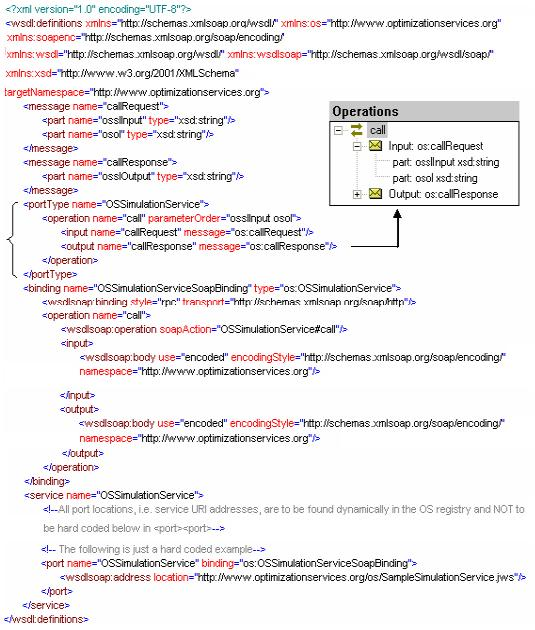
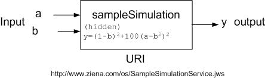

|
Optimization Services call Language (OScL)
Click to see or download the OScL WSDL -> OScL.wsdl [stable]
OScL (call) is a Web Service Definition Language for invoking simulation services that are usually invoked via the Optimization Services to obtain function values.
Theoretically, any client or user on the network can call the simulation service just like a regular Web Service. But under the Optimization Services framework, the main purpose to standardize simulation services is to provide extension to simulation optimization. Therefore in the OS practice, the client that calls the simulation is usually a solver service.
From the Optimization Services framework point of view, if a simulation is to be invoked by an OS-compatible solver, its input and output first have to follow the standard OSsL schema.
To make the communication, both the solver agent and the simulation service have to follow the rules specified in the OScL.wsdl document, just as the communication between a modeler and a solver follows the OShL WSDL document. The following figure shows the interface part of the OScL WSDL document. The other part (protocol & address part) of the WSDL document, like all other OSxL WSDL documents, uses the same specifications as in the OShL WSDL. Briefly the networking protocol has to be “SOAP over HTTP” with an RPC style call; the input and output encoding has to be the standard SOAP encoding; the address is empty and to be dynamically found in the OS Registry if unknown.

The <wsdl:portType> element in the above figure has only one operation whose name is call. The call operation’s input is required to be of message type “callRequest” and its output is required to be of message type “callResponse.” The callRequest message has one part element (i.e. one argument), ossl, which is of string types. Simply put, the WSDL document in the above figure specifies the following single operation for each simulation:
String call(String ossl, String osol);
that is, every simulation service is required to have a method called “call” that takes two input strings and returns one string. The first input specifies the simulation input and the output specifies the simulation output. Both the first input and the output strings have to follow the OSsL schema. The second input string specifies the option and has to follow the OSoL schema. No invalid OSsL instances should be transmitted by the solver onto the network.
Given an optimization problem as in the following figure:
Imagine the entire objective function of the above optimization problem is calculated by a simulation called sampleSimulation shown in the following figure.

Note that it is also possible to have part of an objective or constraint function calculated by a simulation; thus the simulation becomes one internal tree node in an entire expression tree rather than the tree root. Three things have to be specified for the simulation: input, output, and the simulation’s address. The simulation definition is specified in OSsL. It is also discussed in detail in the "sim" OSnLNode section in OSnL.
Notice the sampleSimulation engine can provide more “services” than just calculating the output y from the two inputs a and b.
sampleSimulation can be represented using the OSsL <simulation> element (and in turn the <simulation> element can be embedded in OSiL to represent simulation optimization type of problems.
<simulation name="sampleSimulation">
<uri value="http://www.ziena.com/os/SampleSimulationService.jws"/>
<ossl>
<input>
<el name="a"/>
<el name="b"/>
</input>
<output>
<el name="y"/>
</output>
</ossl>
</simulation>
With the sampleSimulation definition, we can write down the objective (idx = -1) and the constraint (idx = 0) of the above optimization problem. In the example below we pass X0 to the simulation input a and X1 to the simulation input b.
<osil…>
…
<nl idx="-1">
<sim name="sampleSimulation">
<simInput inputName="a"><var idx="0"/></simInput>
<simInput inputName="b"><var idx="1"/></simInput>
<simOutput outputName="y"/>
</sim>
</nl>
<nl idx="0">
<minus>
<plus><var idx="0"/><var idx="1"/></plus>
<number value="100"/>
</minus>
</nl>
<simulation name="sampleSimulation">
<ossl>
<!--definition--> …
</ossl>
</simulation>
…
</osil>
When a solver service gets the OSiL instance, it uses the OS library to parse the input and output instances with no difference and solve the optimization problem as usual:
public class MySolverService {
public String solve(String osil, String osol){
//read OSiL
OSiLReader osilReader = new OSiLReader();
osilReader.readString(osil);
OSInstance osInstance = osilReader.getOSInstance();
//read OSoL
OSoLReader osolReader = new OSoLReader();
osolReader.readString(osol);
OSOption osOption = osolReader.getOSOption();
//solve
MySolver mySolver = new MySolver();
OSResult osResult = mySolver.solve(osInstance, osOption);
//write and return OSrL
OSrLWriter osrlWriter = new OSrLWriter();
String osrl = osrlWriter.writeString(osResult);
return osrl;
}//solve
}//class MySolverService
At each iteration, MySolverService uses the OS library to calculate the function value for the objective (idx = -1) and constraint (idx = 0) functions. MySolverService does not care how the function values are obtained; at each iteration, it passes the variable values [X0, X1] to the OS library to get the function values of indexes -1 and 0. So nothing changes for the solver either. What has changed are the function calculations inside the OS library. Below are some snippet examples of how the OS library does the function calculations. The OS library adopts the Objective-oriented philosophy using information hiding, inheritance, and most importantly polymorphism as described here.
First the solver calls the following method in the OSInstance class:
public double calculateFunction(int rowIdx, double x[]){
double dResult = calculateLinearFunction(rowIdx, x) + calculateNonlinearFunction(rowIdx, x);
return dResult;
}//calculateFunction in OSInstance
The solver passes in the variable array X[] and the rowIdx, -1 for the objective and 0 for the constraint. In the calculateFunction method, there are two parts:
calculateLinearFunction and calculateNonlinearFunction.
In the above example, we list both functions using only nonlinear expressions (<nl>), so calculateLinearFunction returns 0. calculateNonlinearFunction then uses the a expression tree structure to further calculate the nonlinear function:
public double calculateNonlinearFunction(int rowIdx, double x[]){
getNonlinearExpressions();
OSExpressionTree exTree = (OSExpressionTree)(m_expressionTrees.get(rowIdx+""));
return exTree.calculateFunction(x);
}//calculateNonlinearFunction in OSInstance
The OSExpressionTree is a tree of operation nodes all of abstract type OSnLNode, including the root node: m_treeRoot. All concrete nodes that extend the abstract OSnLNode, implement the method calculationFunction(double x[]). The line exTree.calculateFunction(x) invokes the calculateFunction method on the m_treeRoot, which is from the class OSExpressionTree:
public double calculateFunction(double x[]){
return m_treeRoot.calculateFunction(x);
}//calculateFunction in OSExpressionTree
In the constraint function the root is minus. The concrete OSnLNode that corresponds to minus is OSnLNodeMinus. The m_treeRoot.calculateFunction(x) function calls the calculationFunction in OSnLNodeMinus:
protected double calculateFunction(double[] x){
m_dFunctionValue = m_mChildren[0].calculateFunction(x) - m_mChildren[1].calculateFunction(x);
return m_dFunctionValue;
}//calculateFunction in OSnLNodeMinus
OSnLNodeMinus subtracts the value of its second child (of type OSnLNode) from the value of its first child (again of type OSnLNode). What happens next is basically a recursive tree invocation using the polymorphism idea from Object-oriented Programming (OOP). A similar example on polymorphism is also explained in detail in the OOP section.
In the objective function the root is sim. The concrete OSnLNode that corresponds to sim is OSnLNodeSim. The m_treeRoot.calculateFunction(x) function calls the calculationFunction in OSnLNodeSim, which is more complex than OSnLNodeMinus:
protected double calculateFunction(double[] x){
//1. get simulation inputs from each <simInput> child of <sim>
for(int i = 0; i < m_mChildren.length - 1; i++){
OSnLNodeSimInput simInput = (OSnLNodeSimInput)(m_mChildren[i]);
String sInputName = simInput.getInputName();
. . .
}
//2. construct the OSsL simulation service input
String sOSsLInput = XMLUtil.writeXMLElementToString(m_osslReader.getRootElement());
. . .
//3. instantiate an OS simulation agent to contact the remote simulation at the URI address
//and get the result from the simulation service output (in OSsL)
OSSimulationAgent osSimulationAgent = new OSSimulationAgent();
osSimulationAgent.simulationAddress = m_sURI;
String sOSsLOutput = osSimulationAgent.call(sOSsLInput);
// 4. construct the result according to <simOutput> (last child) of <sim> from the returned OSsL.
//We know the result has to be in OSsL format as we called an OS simulation service.
OSnLNodeSimOutput simOutput = (OSnLNodeSimOutput)(m_mChildren[m_mChildren.length - 1]);
OSsLReader osslReader = new OSsLReader();
osslReader.readString(sOSsLOutput);
. . .
m_dFunctionValue = simOutput.calculateFunction(x);
. . .
//5. return function value from the constructed simulation result.
return m_dFunctionValue;
}//calculateFunction in OSnLNodeSim
Five steps are involved in OSnLNodeSim to get the value from the simulation services:
1. OSnLNodeSim gets simulation inputs from each <simInput> child of <sim>. The value of the simInput a is X0 and the value of the simInput b is X1:
<simInput inputName="a">
<var idx="0"/>
</simInput>
<simInput inputName="b">
<var idx="1"/>
</simInput>
2. OSnLNodeSim constructs an OSsL input for the sample simulation service using the OSsLWriter provided in the OS library. Suppose the Solver passes in X0=1.2 and X1=3.4, the OSsL would look like:
<ossl>
<input>
<el name="a">1.2</el>
<el name="b">3.4</el>
</input>
</ossl>
3. OSnLNodeSim instantiates an OS simulation agent to contact the remote sample simulation service at the URI address. The simulation service output is in OSsL.
This step is the only step that involves communication. The communication should be carried out according to the OScL WSDL documents. OSnLNodeSim delegates an OS simulation agent to make the contact to the remote simulation service. The agent hides all the networking complexities. When OSnLNodeSim calls the method:
String OSsLOutput_String = osSimulationAgent.call(OSsLInput_String, OSoL_String);
four communication steps are involved, which is similar to the 4 solver agent steps described in the OShL section. Briefly simulation agent step 1 is encoding of the above constructed OSsL input; simulation agent step 2 is packing the encoded input and the call operation specified in OShL into a SOAP envelope; simulation agent step 3 is sending the SOAP envelope over HTTP to the remote simulation service and wait for a response; and simulation agent step 4 is decoding the result from the simulation service into a plain OSsL format.
4. OSnLNodeSim retrieves the result according to <simOutput> (last child) of <sim> from the decoded OSsL using the OSsLReader provided in the OS library:
<simOutput outputName="y"/>
5. OSnLNodeSim returns function value from the constructed simulation result.
At the simulation side, the simulation service also has to follow the OScL WSDL document. The sample simulation service code looks like:
public class SampleSimulationService {
public String call(String ossl, String osol){
//read ossl
OSsLReader osslReader = new OSsLReader();
double a = Double.parseDouble(osslReader.getInputByName("a"))
double b = Double.parseDouble(osslReader.getInputByName("b"))
//read osol (skipped)
//run simulation
double y = Math.pow((1-b), 2) + 100 * Math.pow(a – b * b);
//write and return OSsL
OSsLWriter osslWriter = new OSsLWriter();
String[ ] outputNames = {“y”};
String[ ] outputValues = {y+""};
String ossl = osslWriter.setOutput({outputNames, outputValues);
return ossl;
}//call
}//class SampleSimulationService
As we can see, the sample simulation service implements the "call" operation required in the OScL WSDL document. There are mainly 3 steps in this operation:
1. Reading
OSsLReader osslReader = new OSsLReader();
double a = Double.parseDouble(osslReader.getInputByName("a"))
double b = Double.parseDouble(osslReader.getInputByName("b"))
The sample simulation service gets the OSsL string and use the OSsLReader class provided in the OS library to parse the OSsL instance into a set of input values (double a, b).
2. running simulation
double y = Math.pow((1-b), 2) + 100 * Math.pow(a – b * b);
The sample simulation basically calculates the function.
3. Writing and returning
OSsLWriter osslWriter = new OSsLWriter();
String[ ] outputNames = {“y”};
String[ ] outputValues = {y+""};
String ossl = osslWriter.setOutput({outputNames, outputValues);
return ossl;
The sample simulation service uses the OSsLWriter class provided in the OS library to write the OSsL result instance from an array of output names and output values. In our example the array sizes are 1, as there is only one output name “y” and one output value y+””. The sample simulation service then returns the OSsL result instance. Of course the sample simulation service has to make sure the OSsL result instance is valid. By using the OS library to construct the OSsL instance, the result should be atomically validated.
In the above 3 steps, we see that the sample simulation service does not need to worry about how the input OSsL instance received from the internet should be decoded. Neither does it need to worry about how to encode and send back the OSsL output to the client. This is because the sample simulation service is hosted by an OS Server in the same way that all other OS services are hosted. The OS Server hides all the networking complexities from the solver service. We simply put the above sample simulation service code in a file called SampleSimulationService.jws and put the file in the os sub-directory relative to the OS Server’s public root directory. Since in our example, we host the sample simulation service at http://www.optimizationservices.org, thus the service address is http://www.optimizationservices.org/os/SampleSimulationService.jws). What the OS Server does is similar to the four solver server steps described in the OShL section. Briefly Simulation server step 1 is decoding the “SOAP over HTTP request” from the solver client that contains the call operation and the OSsL input; Simulation server step 2 is invoking the sample simulation service on the call operation with the decoded OSsL input; Simulation server step 3 is encoding the OSsL output returned by the sample simulation service into a SOAP envelope; and Simulation server step 4 is returning the SOAP envelope over the HTTP transport to the client solver.
This completes the entire simulation “call” process according the Optimization Services call Language. All the networking complexities are hidden and taken care by the OS library. The OS library also provides parsers to read and write standard instances. All that a solver does is to use the OS parser library for reading and writing OSsL instances, delegate the simulation agent to call the simulation and get the function value. All that a simulation service does is to expose the standard interface, implement all the required operations in the interface listed in OScL, let the OS Server take care of the underneath networking, and use the OS parser library to read and write OSsL instances.
Links:
Click to see or download the OScL WSDL -> OScL.wsdl
|

{kind=link}
{kind=link}
{kind=link}